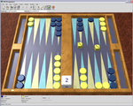
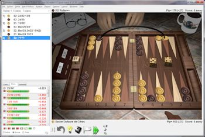

ここに紹介するソフトは、いずれも世界トップの人間を超える強さです。最初はレベルを低く設定して遊んで、ゲームに慣れてきたら徐々にレベルを高くするといいでしょう。これらのソフトは、「強い」というだけでなく、機能、操作性ともに優れており、どれもおすすめできます。また、コンピュータ相手の対戦するだけでなく、対戦したゲームを解析させることも可能です。
| ソフト名 (ホームページにリンク) | ライセンス | 言語 | プラットフォーム | 補足説明 | スクリーンショット |
|---|---|---|---|---|---|
| BGBlitz | フリー版と有料版($23,$46)がある | 日本語対応、多言語 | Windows, Mac, Linux 版がある。 | 最もおすすめ。 BGBlitzの使い方を書いた。バージョン 3.2.0 以降は、思考エンジンに gnubg を選ぶことができるようになった。BGBlitz と gnubg で対戦させることもできる。 |  テーマより |
| GNU Backgammon (gnubg) | フリーソフト (GPL) | 日本語対応、多言語 | Windows, Linux, Mac Mac へのインストールは、MacPortsを使う。 | インストールが問題なくできれば、とても快適。 |  スクリーンショットより |
| eXtreme Gammon (XG) | 有料($59.95)。JBS Shopからも購入可能。 | 英語 | Windows | 現在、トッププレイヤー達の多くはこのソフトで棋譜の解析をしているようであり、業界標準の地位を確立している。ただし、私は Mac ユーザーなので使っていない。 |  スクリーンショットより |
ここに紹介するアプリは、いずれも最強の思考エンジンを使い、解析やゲーム中のヒントの機能を備えている高機能なものです。個人的には、マウスよりもタッチで操作する方が楽なので、PCソフトはあまり使わず、ほぼiPadで遊んでいます。
| アプリ名 | プラットフォーム | 補足説明 |
|---|---|---|
| XG Mobile Backgammon | Android, iOS | eXtreme Gammon のモバイル版。 |
| True Backgammon | Android, iOS, iOS (HD) | アプリ内課金で BGBlitz の思考エンジンを入れることができる。iOS版ではGame Centerでオンライン対戦ができるが、あまり人はいない。 |
| Backgammon NJ | Android, iOS, iOS (HD) | iOS版ではGame Centerでオンライン対戦ができる。対戦相手を待っている間にコンピュータと対戦をしたり解析結果を見たりすることも可能。 |